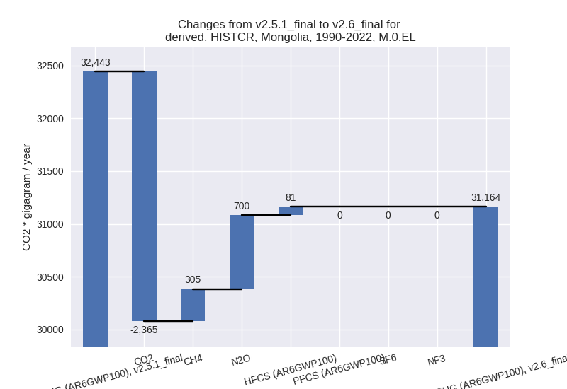
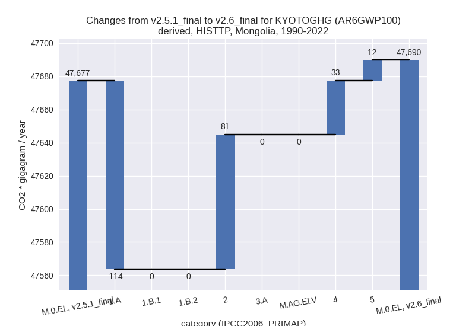

Changes in PRIMAP-hist v2.6_final compared to v2.5.1_final for Mongolia
2024-09-24
Johannes Gütschow
Change analysis for Mongolia for PRIMAP-hist v2.6_final compared to v2.5.1_final
Overview over emissions by sector and gas
The following figures show the aggregate national total emissions excluding LULUCF AR6GWP100 for the country reported priority scenario. The dotted linesshow the v2.5.1_final data.

The following figures show the aggregate national total emissions excluding LULUCF AR6GWP100 for the third party priority scenario. The dotted linesshow the v2.5.1_final data.

Overview over changes
In the country reported priority scenario we have the following changes for aggregate Kyoto GHG and national total emissions excluding LULUCF (M.0.EL):
- Emissions in 2022 have changed by -15.3%% (-8938.06 Gg CO2 / year)
- Emissions in 1990-2022 have changed by -3.9%% (-1278.74 Gg CO2 / year)
In the third party priority scenario we have the following changes for aggregate Kyoto GHG and national total emissions excluding LULUCF (M.0.EL):
- Emissions in 2022 have changed by -0.6%% (-496.12 Gg CO2 / year)
- Emissions in 1990-2022 have changed by 0.0%% (12.49 Gg CO2 / year)
Most important changes per scenario and time frame
In the country reported priority scenario the following sector-gas combinations have the highest absolute impact on national total KyotoGHG (AR6GWP100) emissions in 2022 (top 5):
- 1: 1.A, CO2 with -10802.60 Gg CO2 / year (-38.1%)
- 2: M.AG.ELV, N2O with 1247.77 Gg CO2 / year (17.2%)
- 3: 2, HFCS (AR6GWP100) with 757.45 Gg CO2 / year (237.1%)
- 4: 1.A, CH4 with -293.72 Gg CO2 / year (-68.9%)
- 5: 1.B.1, CO2 with -262.76 Gg CO2 / year (-100.0%)
In the country reported priority scenario the following sector-gas combinations have the highest absolute impact on national total KyotoGHG (AR6GWP100) emissions in 1990-2022 (top 5):
- 1: 1.A, CO2 with -2228.64 Gg CO2 / year (-15.6%)
- 2: M.AG.ELV, N2O with 604.77 Gg CO2 / year (12.7%)
- 3: M.AG.ELV, CH4 with 440.91 Gg CO2 / year (743.4%)
- 4: 1.B.1, CO2 with -146.06 Gg CO2 / year (-100.0%)
- 5: 1.A, CH4 with -144.44 Gg CO2 / year (-59.6%)
In the third party priority scenario the following sector-gas combinations have the highest absolute impact on national total KyotoGHG (AR6GWP100) emissions in 2022 (top 5):
- 1: 1.A, CO2 with -1261.02 Gg CO2 / year (-3.4%)
- 2: 2, HFCS (AR6GWP100) with 757.45 Gg CO2 / year (237.1%)
- 3: 5, N2O with -39.75 Gg CO2 / year (-29.0%)
- 4: 4, CH4 with 37.51 Gg CO2 / year (4.7%)
- 5: 4, N2O with 11.43 Gg CO2 / year (23.0%)
In the third party priority scenario the following sector-gas combinations have the highest absolute impact on national total KyotoGHG (AR6GWP100) emissions in 1990-2022 (top 5):
- 1: 1.A, CO2 with -113.72 Gg CO2 / year (-0.6%)
- 2: 2, HFCS (AR6GWP100) with 81.49 Gg CO2 / year (107.0%)
- 3: 4, CH4 with 30.46 Gg CO2 / year (5.4%)
- 4: 5, N2O with 12.28 Gg CO2 / year (16.2%)
- 5: 4, N2O with 2.08 Gg CO2 / year (5.8%)
Notes on data changes
Here we list notes explaining important emissions changes for the country. ’' means that the following text only applies to the TP time series, while means that it only applies to the CR scenario. Otherwise the note applies to both scenarios.
- We have included data from BUR2. It covers a longer time period and is mostly consistent with BUR1 data. However, many sectors only have sufficient data in 5-year time steps. The new BUR data has changed emissions estimates in many sectors, a few of the most important changes are listed below.
- Energy CO2 data is much lower post 2014 because the BUR2 data does not show the steep emissions increase that is in CDIAC and EI data. BUR1 data is only until 2014 and thus the third party sources had to be used in PRIMAP-hist v2.5.1 (CR).
- CH4 from fossil fuel combustion is generally much lower in BUR2 (CR)
- CO2 in 1.B.1 is now 0 as it is included as 0 in BUR2 and was missing in BUR1 and taken from EDGAR
- N2O from M.AG.ELV is higher for most years, CH4 is much higher for most years.
- HFCs are much higher in CR and TP scenarios because BUR2 shows a steep increase between 2015 and 2020 and is also used for the TP scenario (no third party data available)
- Changes in sectors 4 and 5 in the TP scenario are due to the removal of FAOSTAT data.
Changes by sector and gas
For each scenario and time frame the changes are displayed for all individual sectors and all individual gases. In the sector plot we use aggregate Kyoto GHGs in AR6GWP100. In the gas plot we usenational total emissions without LULUCF. ## country reported scenario
2022
1990-2022

third party scenario
2022
1990-2022

Detailed changes for the scenarios:
country reported scenario (HISTCR):
Most important changes per time frame
For 2022 the following sector-gas combinations have the highest absolute impact on national total KyotoGHG (AR6GWP100) emissions in 2022 (top 5):
- 1: 1.A, CO2 with -10802.60 Gg CO2 / year (-38.1%)
- 2: M.AG.ELV, N2O with 1247.77 Gg CO2 / year (17.2%)
- 3: 2, HFCS (AR6GWP100) with 757.45 Gg CO2 / year (237.1%)
- 4: 1.A, CH4 with -293.72 Gg CO2 / year (-68.9%)
- 5: 1.B.1, CO2 with -262.76 Gg CO2 / year (-100.0%)
For 1990-2022 the following sector-gas combinations have the highest absolute impact on national total KyotoGHG (AR6GWP100) emissions in 1990-2022 (top 5):
- 1: 1.A, CO2 with -2228.64 Gg CO2 / year (-15.6%)
- 2: M.AG.ELV, N2O with 604.77 Gg CO2 / year (12.7%)
- 3: M.AG.ELV, CH4 with 440.91 Gg CO2 / year (743.4%)
- 4: 1.B.1, CO2 with -146.06 Gg CO2 / year (-100.0%)
- 5: 1.A, CH4 with -144.44 Gg CO2 / year (-59.6%)
Changes in the main sectors for aggregate KyotoGHG (AR6GWP100) are
- 1: Total sectoral emissions in 2022 are 19152.80 Gg
CO2 / year which is 38.8% of M.0.EL emissions. 2022 Emissions have
changed by -36.5% (-11024.26 Gg CO2
/ year). 1990-2022 Emissions have changed by -15.7% (-2419.41 Gg CO2 / year). For 2022
the changes per gas
are:
For 1990-2022 the changes per gas are:
The changes come from the following subsectors:- 1.A: Total sectoral emissions in 2022 are 18044.48
Gg CO2 / year which is 94.2% of category 1 emissions. 2022 Emissions
have changed by -37.7% (-10911.39 Gg
CO2 / year). 1990-2022 Emissions have changed by -15.7% (-2291.59 Gg CO2 / year). For 2022
the changes per gas
are:
For 1990-2022 the changes per gas are:
There is no subsector information available in PRIMAP-hist. - 1.B.1: Total sectoral emissions in 2022 are 686.76
Gg CO2 / year which is 3.6% of category 1 emissions. 2022 Emissions have
changed by -21.9% (-193.08 Gg CO2 /
year). 1990-2022 Emissions have changed by -11.5% (-59.72 Gg CO2 / year). For 2022
the changes per gas
are:
For 1990-2022 the changes per gas are:
There is no subsector information available in PRIMAP-hist. - 1.B.2: Total sectoral emissions in 2022 are 421.57
Gg CO2 / year which is 2.2% of category 1 emissions. 2022 Emissions have
changed by 23.5% (80.20 Gg CO2 /
year). 1990-2022 Emissions have changed by -24.7% (-68.10 Gg CO2 / year). For 2022
the changes per gas
are:
For 1990-2022 the changes per gas are:
There is no subsector information available in PRIMAP-hist.
- 1.A: Total sectoral emissions in 2022 are 18044.48
Gg CO2 / year which is 94.2% of category 1 emissions. 2022 Emissions
have changed by -37.7% (-10911.39 Gg
CO2 / year). 1990-2022 Emissions have changed by -15.7% (-2291.59 Gg CO2 / year). For 2022
the changes per gas
are:
- 2: Total sectoral emissions in 2022 are 1706.78 Gg
CO2 / year which is 3.5% of M.0.EL emissions. 2022 Emissions have
changed by 72.8% (719.05 Gg CO2 /
year). 1990-2022 Emissions have changed by 25.8% (74.27 Gg CO2 / year). For 2022 the
changes per gas
are:
For 1990-2022 the changes per gas are: - M.AG: Total sectoral emissions in 2022 are 28055.94
Gg CO2 / year which is 56.9% of M.0.EL emissions. 2022 Emissions have
changed by 4.9% (1317.26 Gg CO2 /
year). 1990-2022 Emissions have changed by 6.3% (1041.92 Gg CO2 / year). For 2022 the
changes per gas
are:
For 1990-2022 the changes per gas are:
The changes come from the following subsectors:- 3.A: Total sectoral emissions in 2022 are 19449.49 Gg CO2 / year which is 69.3% of category M.AG emissions. 2022 Emissions have changed by -0.2% (-46.02 Gg CO2 / year). 1990-2022 Emissions have changed by -0.0% (-3.77 Gg CO2 / year).
- M.AG.ELV: Total sectoral emissions in 2022 are
8606.45 Gg CO2 / year which is 30.7% of category M.AG emissions. 2022
Emissions have changed by 18.8%
(1363.28 Gg CO2 / year). 1990-2022 Emissions have changed by 21.6% (1045.69 Gg CO2 / year). For 2022
the changes per gas
are:
For 1990-2022 the changes per gas are:
There is no subsector information available in PRIMAP-hist.
- 4: Total sectoral emissions in 2022 are 335.77 Gg
CO2 / year which is 0.7% of M.0.EL emissions. 2022 Emissions have
changed by 36.4% (89.65 Gg CO2 /
year). 1990-2022 Emissions have changed by 9.1% (12.21 Gg CO2 / year). For 2022 the
changes per gas
are:
For 1990-2022 the changes per gas are: - 5: Total sectoral emissions in 2022 are 97.08 Gg
CO2 / year which is 0.2% of M.0.EL emissions. 2022 Emissions have
changed by -29.0% (-39.75 Gg CO2 /
year). 1990-2022 Emissions have changed by 16.2% (12.28 Gg CO2 / year). For 2022 the
changes per gas
are:
For 1990-2022 the changes per gas are:
third party scenario (HISTTP):
Most important changes per time frame
For 2022 the following sector-gas combinations have the highest absolute impact on national total KyotoGHG (AR6GWP100) emissions in 2022 (top 5):
- 1: 1.A, CO2 with -1261.02 Gg CO2 / year (-3.4%)
- 2: 2, HFCS (AR6GWP100) with 757.45 Gg CO2 / year (237.1%)
- 3: 5, N2O with -39.75 Gg CO2 / year (-29.0%)
- 4: 4, CH4 with 37.51 Gg CO2 / year (4.7%)
- 5: 4, N2O with 11.43 Gg CO2 / year (23.0%)
For 1990-2022 the following sector-gas combinations have the highest absolute impact on national total KyotoGHG (AR6GWP100) emissions in 1990-2022 (top 5):
- 1: 1.A, CO2 with -113.72 Gg CO2 / year (-0.6%)
- 2: 2, HFCS (AR6GWP100) with 81.49 Gg CO2 / year (107.0%)
- 3: 4, CH4 with 30.46 Gg CO2 / year (5.4%)
- 4: 5, N2O with 12.28 Gg CO2 / year (16.2%)
- 5: 4, N2O with 2.08 Gg CO2 / year (5.8%)
Changes in the main sectors for aggregate KyotoGHG (AR6GWP100) are
- 1: Total sectoral emissions in 2022 are 49187.69 Gg
CO2 / year which is 58.0% of M.0.EL emissions. 2022 Emissions have
changed by -2.5% (-1261.01 Gg CO2 /
year). 1990-2022 Emissions have changed by -0.5% (-113.72 Gg CO2 / year). For 2022
the changes per gas
are:
The changes come from the following subsectors:- 1.A: Total sectoral emissions in 2022 are 37051.49
Gg CO2 / year which is 75.3% of category 1 emissions. 2022 Emissions
have changed by -3.3% (-1261.01 Gg
CO2 / year). 1990-2022 Emissions have changed by -0.6% (-113.72 Gg CO2 / year). For 2022
the changes per gas
are:
There is no subsector information available in PRIMAP-hist. - 1.B.1: Total sectoral emissions in 2022 are 12068.18 Gg CO2 / year which is 24.5% of category 1 emissions. 2022 Emissions have changed by 0.0% (0.00 Gg CO2 / year). 1990-2022 Emissions have changed by 0.0% (0.00 Gg CO2 / year).
- 1.B.2: Total sectoral emissions in 2022 are 68.03 Gg CO2 / year which is 0.1% of category 1 emissions. 2022 Emissions have changed by 0.0% (0.00 Gg CO2 / year). 1990-2022 Emissions have changed by 0.0% (0.00 Gg CO2 / year).
- 1.A: Total sectoral emissions in 2022 are 37051.49
Gg CO2 / year which is 75.3% of category 1 emissions. 2022 Emissions
have changed by -3.3% (-1261.01 Gg
CO2 / year). 1990-2022 Emissions have changed by -0.6% (-113.72 Gg CO2 / year). For 2022
the changes per gas
are:
- 2: Total sectoral emissions in 2022 are 1670.65 Gg
CO2 / year which is 2.0% of M.0.EL emissions. 2022 Emissions have
changed by 82.6% (755.71 Gg CO2 /
year). 1990-2022 Emissions have changed by 32.3% (81.38 Gg CO2 / year). For 2022 the
changes per gas
are:
For 1990-2022 the changes per gas are:
- M.AG: Total sectoral emissions in 2022 are 32929.39 Gg CO2 / year which is 38.8% of M.0.EL emissions. 2022 Emissions have changed by 0.0% (0.00 Gg CO2 / year). 1990-2022 Emissions have changed by 0.0% (0.00 Gg CO2 / year).
- 4: Total sectoral emissions in 2022 are 901.16 Gg
CO2 / year which is 1.1% of M.0.EL emissions. 2022 Emissions have
changed by 5.7% (48.93 Gg CO2 /
year). 1990-2022 Emissions have changed by 5.5% (32.54 Gg CO2 / year). For 2022 the
changes per gas
are:
For 1990-2022 the changes per gas are: - 5: Total sectoral emissions in 2022 are 97.08 Gg
CO2 / year which is 0.1% of M.0.EL emissions. 2022 Emissions have
changed by -29.0% (-39.75 Gg CO2 /
year). 1990-2022 Emissions have changed by 16.2% (12.28 Gg CO2 / year). For 2022 the
changes per gas
are:
For 1990-2022 the changes per gas are: